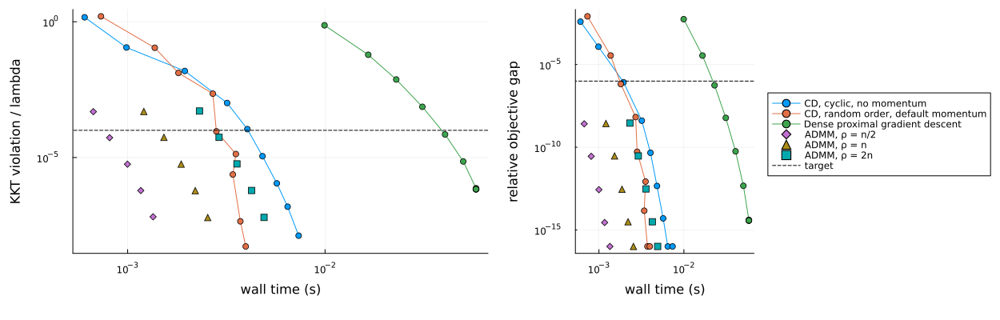

Lasso: solvers at equal accuracy
Suppose two algorithms fit the same sparse regression model. One returns quickly, but its coefficients are still far from satisfying the optimization conditions. Calling it faster would confuse speed with accuracy. This tutorial compares four solver configurations after checking their answers on a common scale.
We observe $y = X\beta^\star + \varepsilon$ with a sparse coefficient vector and correlated predictors, and solve the lasso problem
\[\min_\beta\quad F(\beta) = \frac{1}{2n}\|y-X\beta\|_2^2 + \lambda\|\beta\|_1.\]
The penalty encourages a small model. Changing the algorithm should change how we compute its estimate, rather than change the statistical objective.

In the figure, each marker is a separate solve from zero at one tolerance setting, not a point in one solver's iteration history. Consensus ADMM has two settings, a tolerance and a penalty parameter ρ; its markers are separate solves for each pair, drawn without lines, because no single history joins solves that use different ρ. The left panel checks stationarity; the right checks objective accuracy against a tightly solved reference. A setting must lie below both dashed lines to reach the common target. The measured times illustrate this experiment; they do not establish a general speed ranking.
Download this example as a Jupyter notebook
Why the stopping flags are not enough
Each solver stops by its own rule, documented with CDSolver and ProximalOptions. Coordinate descent measures coefficient changes over a pass; proximal gradient descent measures objective, iterate, and gradient/proximal changes. Their tolerances are not on a common scale, and converged reports the solver's own test rather than an independent optimality certificate. We sweep tolerances, check the returned coefficients from the data, and report the first setting meeting both accuracy targets. The configurations are cyclic coordinate descent without momentum, random-order coordinate descent with default momentum and a seeded generator, dense proximal gradient descent, and consensus ADMM, which compares a primal and a dual residual with absolute-plus-relative tolerances (ADM-02).
A reproducible correlated-regression experiment
The design has n = 1000 rows and p = 200 columns that follow an AR(1) pattern with correlation rho between neighbouring columns. Twenty coefficients are nonzero and the noise has unit variance. The regularization is lambda = lambda_max / 100, where lambda_max = maximum(abs, X' * y) / n is the smallest lambda at which the zero vector satisfies the KKT conditions of the lasso objective below.
using LinearAlgebra, Printf, Random, ProximalBase, ProximalSolvers
rho = 0.9
n, p = 1000, 200
rng = Xoshiro(1)
Z = randn(rng, n, p)
X = similar(Z)
X[:, 1] = Z[:, 1]
for j in 2:p
X[:, j] = rho * X[:, j-1] + sqrt(1 - rho^2) * Z[:, j]
end
beta0 = zeros(p)
beta0[1:5:100] .= repeat([2, -1.5, 1, -1, 0.8, -0.6, 0.5, -0.4, 0.3, -0.2], 2)
y = X * beta0 + randn(rng, n)
lambda_max = maximum(abs, X' * y) / n
lambda = lambda_max / 100
f = (1 / n) * LeastSquaresLoss(y, X)
g = NormL1(lambda);The same problem for ADMM
ADMMSolver takes the raw loss LeastSquaresLoss(y, X) without the factor 1/n. Multiplying the objective above by n gives ‖y - Xβ‖²/2 + (n * lambda)‖β‖₁, so ADMM minimizes the same statistical problem with the penalty NormL1(n * lambda) and reports an objective that is n times the one above. The design is tall (n > p) with exact Float64 data, which is what this solver path accepts (ADM-05). The loss f_raw below is created once and used by every ADMM solve of this page, one solve at a time, because the cache of its SVD lives in the loss.
f_raw = LeastSquaresLoss(y, X)
g_raw = NormL1(n * lambda);What counts as an accurate answer?
The two functions below compute from the problem data X, y, n and lambda and from the coefficient vector they are given; they use no solver diagnostics, cached quantities or reported values. The objective is the lasso objective. A KKT residual measures how far the first-order optimality conditions are from holding. For a zero coefficient it is the excess of the gradient magnitude over lambda, and for a nonzero coefficient it is the distance of the gradient from -lambda * sign(beta[j]). It is divided by lambda below.
objective(beta) = sum(abs2, y - X * beta) / (2n) + lambda * sum(abs, beta)
function kktviolation(beta)
grad = -X' * (y - X * beta) / n
maximum(j -> iszero(beta[j]) ? max(abs(grad[j]) - lambda, 0.0) :
abs(grad[j] + lambda * sign(beta[j])), eachindex(beta))
end;Construct a reference estimate
The reference objective value fstar comes from cyclic coordinate descent run to a very small tolerance with relative=false, started from zero. The assertions check that its independently measured KKT violation is small and that the independent objective matches the objective the solver reports.
reference = zeros(p)
refresult = solve!(reference, f, g,
CDSolver(order=:cyclic, momentum=false, relative=false, tol=1e-14, maxpasses=1_000_000))
fstar = objective(reference)
@assert refresult.converged
@assert kktviolation(reference) / lambda <= 1e-10
@assert isapprox(fstar, refresult.minimum; rtol=1e-10)ADMM pays a setup cost once
The proximal step of the least-squares loss uses a thin SVD of X, computed on the first proximal call and cached in the loss. Every later call, for any step size, costs only products with the cached factors, so the iterations of ADMM are cheap but the first call is not. We time the two parts separately so that neither hides in the other.
Julia first compiles the solver on a different tiny loss, so that compilation never reaches the loss f_raw. A proximal call on a loss of the same size with other random data then warms the SVD code at this size without touching the cache of f_raw. The first proximal call on f_raw is the cold one. The setup time is that call minus the minimum time of later calls, which reuse the cache.
tiny_loss = LeastSquaresLoss([1.0, -1.0, 0.5], [1.0 0.0; 0.0 2.0; 1.0 1.0])
solve!(zeros(2), tiny_loss, NormL1(0.1), ADMMSolver(ρ=1.0), ProximalOptions(maxiter=100))
similar_loss = LeastSquaresLoss(randn(Xoshiro(3), n), randn(Xoshiro(2), n, p))
probe, point = zeros(p), randn(Xoshiro(4), p)
prox!(probe, similar_loss, point, 1 / n)
first_prox = @elapsed prox!(probe, f_raw, point, 1 / n)
cached_prox = minimum(@elapsed(prox!(probe, f_raw, point, 1 / n)) for _ in 1:20)
svd_setup = max(first_prox - cached_prox, 0.0);Run the same experiment for each solver
Each run of the sweeps starts from the zero vector. The wall time of a setting is the minimum over five timed repetitions of the solve! call alone, after one warm-up call; the solver object is built before the timer starts. Each random-order coordinate descent run gets a new Xoshiro generator with the same seed. For each setting the sweep records the time, the number of passes (coordinate descent) or iterations (proximal gradient descent and ADMM), the converged flag, the relative objective gap (F - fstar) / abs(fstar) and the KKT violation divided by lambda. Coordinate descent is swept over tol and proximal gradient descent over one scale used for ftol, xtol and gradtol together, with a large maxiter.
ADMM is swept over tol, used for both abstol and reltol, and over the penalty parameter ρ in the grid n/2, n, 2n. The tolerances form the outer loop, from the loosest to the tightest, and the three values of ρ the inner loop, so the first setting that reaches the target has the loosest tolerance that any of the three values reaches. Each solve is capped at admmmaxiter = 10_000 iterations. A solve that stops at the cap reports :iteration_limit, and the independent checks decide, as for every solver, whether it reached the target. It also uses the single cached loss f_raw, so its times are cached-solve times: the input checks, the iterations and the final objective evaluation, not the SVD setup above. For the returned fit at each setting, the sweep checks that the objective it reports, divided by n, matches the objective computed from the data.
function measure(prepare; repetitions=5)
besttime = Inf
beta = zeros(p)
result = nothing
for k in 1:repetitions + 1
run! = prepare()
beta = zeros(p)
elapsed = @elapsed result = run!(beta)
k > 1 && (besttime = min(besttime, elapsed))
end
besttime, beta, result
end
function sweep(settings, prepare, work; extra = (result, beta) -> NamedTuple())
map(settings) do setting
time, beta, result = measure(() -> prepare(setting))
merge((setting = setting, time = time, work = work(result), converged = result.converged,
gap = (objective(beta) - fstar) / abs(fstar), kkt = kktviolation(beta) / lambda),
extra(result, beta))
end
end
cdseed = 7
cdtols = 10.0 .^ (-2:-1:-10)
pgdscales = 10.0 .^ (-2:-1:-13)
admmtols = [1e-4, 1e-5, 1e-6, 1e-7, 1e-8]
admmrhos = [n / 2, n, 2n]
admmmaxiter = 10_000
admmsettings = [(tol = tol, ρ = ρ) for tol in admmtols for ρ in admmrhos]
cyclic = sweep(cdtols,
tol -> (solver = CDSolver(order=:cyclic, momentum=false, tol=tol);
beta -> solve!(beta, f, g, solver)),
result -> result.passes)
randomorder = sweep(cdtols,
tol -> (solver = CDSolver(order=:random, rng=Xoshiro(cdseed), tol=tol);
beta -> solve!(beta, f, g, solver)),
result -> result.passes)
pgd = sweep(pgdscales,
scale -> (method = ProximalGradientDescent();
options = ProximalOptions(maxiter=200_000, ftol=scale, xtol=scale, gradtol=scale);
beta -> solve!(beta, f, g, method, options)),
result -> result.iterations)
admm = sweep(admmsettings,
setting -> (solver = ADMMSolver(ρ=setting.ρ, abstol=setting.tol, reltol=setting.tol);
options = ProximalOptions(maxiter=admmmaxiter);
beta -> solve!(beta, f_raw, g_raw, solver, options)),
result -> result.iterations;
extra = (result, beta) -> (status = result.status,
reported_matches = isapprox(result.minimum / n, objective(beta); rtol=1e-10)));The reported objective of the returned fit at each ADMM setting matches the independent objective.
@assert all(run -> run.reported_matches, admm) "an ADMM objective differs from the independent objective"Time to the target accuracy
A setting reaches the target when its relative objective gap is at most gaptarget and its KKT violation divided by lambda is at most kkttarget. The time to target of a solver is the time of the first setting in its sweep, from the loosest to the tightest, that reaches the target. A solver with no such setting is reported as not reached. For ADMM the order is the tolerance first and ρ second, in the order n/2, n, 2n, so the row shown is the first setting in that order and not the fastest ρ. The last column counts the settings in the sweep that the solver flagged converged while the KKT violation divided by lambda exceeded flagtol.
gaptarget = 1e-6
kkttarget = 1e-4
flagtol = 1e-3
reached(run) = run.gap <= gaptarget && run.kkt <= kkttarget
tolsetting(parameter) = setting -> @sprintf("%s = %.0e", parameter, setting)
admmsetting(setting) = @sprintf("tol = %.0e, ρ = %g (ρ/n = %g)", setting.tol, setting.ρ, setting.ρ / n)
sweeps = ["CD, cyclic, no momentum" => (cyclic, tolsetting("tol"), "passes"),
"CD, random order, default momentum" => (randomorder, tolsetting("tol"), "passes"),
"Dense proximal gradient descent" => (pgd, tolsetting("scale"), "iterations"),
"Consensus ADMM, cached SVD" => (admm, admmsetting, "iterations")]
function tablerow(name, runs, describe, unit)
flagged = count(run -> run.converged && run.kkt > flagtol, runs)
k = findfirst(reached, runs)
if k === nothing
@sprintf("| %s | not reached | not reached | not reached | not reached | not reached | %d of %d |",
name, flagged, length(runs))
else
run = runs[k]
@sprintf("| %s | %s | %.2f | %d %s | %.2e | %.2e | %d of %d |",
name, describe(run.setting), 1000 * run.time, run.work, unit, run.gap, run.kkt,
flagged, length(runs))
end
end
header = ["| Solver | Setting at target | Time to target (ms) | Work at target | Objective gap | KKT/lambda | Settings flagged converged with KKT/lambda > $flagtol |",
"|:--|:--|--:|--:|--:|--:|--:|"]
table = join(vcat(header, [tablerow(name, runs, describe, unit)
for (name, (runs, describe, unit)) in sweeps]), "\n");The script and the notebook print the table as plain Markdown text. The documentation page shows it rendered.
using Markdown
Markdown.parse(table)| Solver | Setting at target | Time to target (ms) | Work at target | Objective gap | KKT/lambda | Settings flagged converged with KKT/lambda > 0.001 |
|---|---|---|---|---|---|---|
| CD, cyclic, no momentum | tol = 1e-07 | 4.82 | 271 passes | 4.54e-13 | 1.12e-05 | 4 of 9 |
| CD, random order, default momentum | tol = 1e-06 | 2.81 | 145 passes | 5.28e-11 | 9.19e-05 | 4 of 9 |
| Dense proximal gradient descent | scale = 1e-06 | 40.56 | 724 iterations | 5.66e-11 | 7.07e-05 | 3 of 12 |
| Consensus ADMM, cached SVD | tol = 1e-05, ρ = 500 (ρ/n = 0.5) | 0.81 | 98 iterations | 2.82e-11 | 5.35e-05 | 0 of 15 |
ADMM settings and setup
The table keeps one row for ADMM. The grid below lists every ADMM setting, with its tolerance, its ρ and the scale ρ/n, so that the other values of ρ stay visible. Its last column says whether the setting reached the target.
admmgrid_header = ["| tol | ρ | ρ/n | Status | Iterations | Cached solve (ms) | Objective gap | KKT/lambda | Reached |",
"|--:|--:|--:|:--|--:|--:|--:|--:|:--|"]
admmgrid_rows = [@sprintf("| %.0e | %g | %g | `%s` | %d | %.2f | %.2e | %.2e | %s |",
run.setting.tol, run.setting.ρ, run.setting.ρ / n, run.status, run.work,
1000 * run.time, run.gap, run.kkt, reached(run) ? "yes" : "no")
for run in admm]
admmgrid = join(vcat(admmgrid_header, admmgrid_rows), "\n");
Markdown.parse(admmgrid)| tol | ρ | ρ/n | Status | Iterations | Cached solve (ms) | Objective gap | KKT/lambda | Reached |
|---|---|---|---|---|---|---|---|---|
| 1e-04 | 500 | 0.5 | converged | 76 | 0.67 | 2.61e-09 | 4.87e-04 | no |
| 1e-04 | 1000 | 1 | converged | 148 | 1.21 | 2.72e-09 | 4.96e-04 | no |
| 1e-04 | 2000 | 2 | converged | 291 | 2.31 | 2.88e-09 | 5.15e-04 | no |
| 1e-05 | 500 | 0.5 | converged | 98 | 0.81 | 2.82e-11 | 5.35e-05 | yes |
| 1e-05 | 1000 | 1 | converged | 191 | 1.53 | 2.96e-11 | 5.52e-05 | yes |
| 1e-05 | 2000 | 2 | converged | 377 | 2.90 | 2.97e-11 | 5.52e-05 | yes |
| 1e-06 | 500 | 0.5 | converged | 121 | 1.00 | 2.71e-13 | 5.67e-06 | yes |
| 1e-06 | 1000 | 1 | converged | 236 | 1.87 | 2.86e-13 | 5.70e-06 | yes |
| 1e-06 | 2000 | 2 | converged | 465 | 3.58 | 3.01e-13 | 5.81e-06 | yes |
| 1e-07 | 500 | 0.5 | converged | 144 | 1.17 | 2.80e-15 | 6.07e-07 | yes |
| 1e-07 | 1000 | 1 | converged | 281 | 2.20 | 3.11e-15 | 6.02e-07 | yes |
| 1e-07 | 2000 | 2 | converged | 554 | 4.25 | 3.11e-15 | 6.11e-07 | yes |
| 1e-08 | 500 | 0.5 | converged | 167 | 1.35 | 0.00e+00 | 6.56e-08 | yes |
| 1e-08 | 1000 | 1 | converged | 327 | 2.55 | 0.00e+00 | 6.15e-08 | yes |
| 1e-08 | 2000 | 2 | converged | 645 | 4.91 | -1.55e-16 | 6.22e-08 | yes |
Each solver must reach the target at some setting of its sweep; this checks accuracy and says nothing about time.
for (name, (runs, describe, unit)) in sweeps
@assert any(reached, runs) "$name does not reach the target in its sweep"
endThe timings above exclude the one-time SVD setup. This is the tradeoff of ADMM for this loss. The SVD of a tall X costs on the order of n p² operations, once. Each later proximal call is a pair of products with p × p factors, on the order of p², while a coordinate descent pass costs on the order of n p. The setup depends on X and y only, so several fits with other values of ρ, tol or the penalty level reuse it, but one fit pays all of it. The next table gives the setup and the time to target of the first ADMM setting that reached it, with and without the setup.
admm_target = findfirst(reached, admm)
admm_target === nothing && error("Consensus ADMM does not reach the target in its sweep")
admm_solve = admm[admm_target].time
setup_header = ["| Quantity | Time (ms) |", "|:--|--:|"]
setup_rows = [@sprintf("| First proximal call on `f_raw` (SVD setup and one call) | %.3f |", 1000 * first_prox),
@sprintf("| Later proximal call with the cached SVD (minimum of 20) | %.3f |", 1000 * cached_prox),
@sprintf("| SVD setup (difference) | %.3f |", 1000 * svd_setup),
@sprintf("| ADMM time to target, cached solve | %.3f |", 1000 * admm_solve),
@sprintf("| ADMM time to target, cached solve plus SVD setup | %.3f |", 1000 * (admm_solve + svd_setup))]
setup_table = join(vcat(setup_header, setup_rows), "\n");
Markdown.parse(setup_table)| Quantity | Time (ms) |
|---|---|
First proximal call on f_raw (SVD setup and one call) | 18.399 |
| Later proximal call with the cached SVD (minimum of 20) | 0.008 |
| SVD setup (difference) | 18.391 |
| ADMM time to target, cached solve | 0.810 |
| ADMM time to target, cached solve plus SVD setup | 19.202 |
Reproduce and interpret the figure
Each line is one solver and each marker one setting of its sweep. The left panel shows the KKT violation divided by lambda and the right panel the relative objective gap, both against the wall time of the setting on logarithmic axes. The horizontal lines mark the targets. ADMM has no line: its markers are separate solves, with one marker shape for each of the three values of ρ, and the five markers of one shape differ in tolerance only. Values below 1e-16 are drawn at 1e-16; the table and the assertions use the unfloored values. The plotting code is part of the documentation page and the notebook and is not run by the plain script.
using Plots
plotfloor(v) = max(v, 1e-16)
kktplot = plot(xscale=:log10, yscale=:log10, xlabel="wall time (s)", ylabel="KKT violation / lambda", legend=false)
gapplot = plot(xscale=:log10, yscale=:log10, xlabel="wall time (s)", ylabel="relative objective gap", legend=:outerright)
for (name, (runs, describe, unit)) in sweeps[1:3]
plot!(kktplot, [run.time for run in runs], [plotfloor(run.kkt) for run in runs];
marker=:circle, label=name)
plot!(gapplot, [run.time for run in runs], [plotfloor(run.gap) for run in runs];
marker=:circle, label=name)
end
for (ρ, rholabel, marker) in zip(admmrhos, ("n/2", "n", "2n"), (:diamond, :utriangle, :square))
runs = filter(run -> run.setting.ρ == ρ, admm)
scatter!(kktplot, [run.time for run in runs], [plotfloor(run.kkt) for run in runs];
marker=marker, label="ADMM, ρ = $rholabel")
scatter!(gapplot, [run.time for run in runs], [plotfloor(run.gap) for run in runs];
marker=marker, label="ADMM, ρ = $rholabel")
end
hline!(kktplot, [kkttarget]; color=:black, linestyle=:dash, label="target")
hline!(gapplot, [gaptarget]; color=:black, linestyle=:dash, label="target")
accuracy_plot = plot(kktplot, gapplot; layout=(1, 2), size=(1250, 400), bottom_margin=5Plots.mm, left_margin=5Plots.mm)
savefig(accuracy_plot, "lasso_solvers.svg")
nothingLimitations of the comparison
Each time above is the minimum of five timed repetitions after a warm-up call. The times illustrate how to compare solvers at equal accuracy and are not benchmark evidence.
The ADMM rows cover only what the solver accepts here: exact Float64 data and a tall or square design, with the raw loss and the penalty n * lambda (ADM-05). The grid has three values of ρ and five tolerances, fixed before the run and not tuned, and the cap is admmmaxiter = 10_000 iterations per solve. A different ρ can change the iteration counts a lot, and the table row is the first setting that reached the target in the stated order, so it can take longer than another ρ in the grid. The setup is paid once per loss and design; if one fit is all that is needed, compare the time with the setup included. The setup depends on the shape of X, and the table says nothing about wide designs, which ADMMSolver refuses for this loss.
The times on this page come from the machine that built the documentation, which can be a shared continuous-integration runner. They come from one machine in one run; see Benchmarks and performance for how they differ from the benchmark evidence of the repository.
The random-order timings are for the one seed cdseed. The comparison covers this one problem, with one correlation level, one lambda and one design. Dense proximal gradient descent on a SparseIterate and ADMM with any other loss are not part of it. The last column of the table counts, for this problem, the settings whose converged flag was set while the independent KKT measure was above flagtol.
A nearly horizontal objective-gap curve can coexist with a larger KKT residual: objective value and stationarity measure different aspects of optimization error. Tightening a solver tolerance can increase work without a useful accuracy gain once floating-point arithmetic limits the returned answer. Use both panels and the table instead of selecting a winner from one low-time marker. The reference itself is a numerical fit, not a known exact minimum; very small or negative computed gaps can reflect its finite precision. The plot floors gaps for logarithmic display only.
These checks assess optimization, not prediction or variable-selection quality. Correlated predictors can make coefficients sensitive even when objective values agree closely. Choosing lambda and assessing uncertainty require a separate statistical analysis. The run excludes other designs, penalty levels, precisions, hardware, and solver configurations.
What we learned
Compare algorithms on the same objective, starting point, and independently checked accuracy target. A solver's stopping flag is useful diagnostic information, but it cannot replace that common check. Here the table answers how much measured work each configuration needed for this target; a general performance claim needs the separate benchmark workflow.